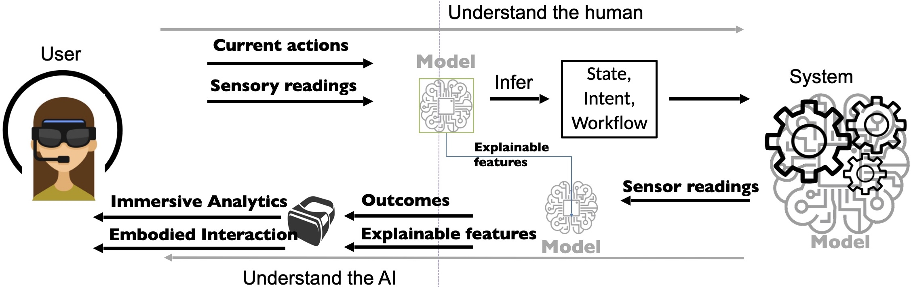

Eduardo serves as Professor for Intelligent and Adaptive User Interfaces with the Institute of Interactive Systems and Data Science, Graz University of Technology (ISDS TUGraz) and he also serves as Research Manager of the Human-AI Interaction area at Know-Center GmbH. Eduardo's research is dedicated to addressing the challenges of Human-Centered Computing with a focus on advancing technology towards understanding and enhancing human capabilities. This research spans a wide range of technologies and methods, including augmented and virtual reality, human factors research, and methods to collect data from humans for AI algorithms. He is an experienced research leader having formulated research strategies and secured funding for three groups in Knowledge Visualization, Wearable Computing, and Continual Learning. Eduardo holds a PhD in Computer Science from Graz University of Technology, a Masters in Information Science and Technology from Osaka University, and holds a degree in Software Engineering from National University of Technology, Argentina.
Research
Computing has become an integral part of human existence, revolutionizing the way people perceive, interact with, and interpret the world. Yet, people routinely deal with larger, more complex volumes of information, while intelligent technology undertakes human activities. With artificially intelligence having more agency over aspects of the system and the information, a challenge arises in communication and collaboration between human and AI.

The overarching goal of this agenda is to investigate methods that promote a mutual understanding between humans and AI, enabling humans and AI to engage in synergistic collaboration. The aim is to enhance human capabilities, to empower them to achieve tasks previously considered impossible, while maintaining a seamless and natural interaction. Fundamental elements needed to succeed are:
AI-Human Synergy. Systems that not only serve as tools but also actively collaborate with individuals perceiving and interpreting their context, preferences, and evolving needs.
Wearable human augmentation.
Wearable and immersive techniques play a crucial role in the interaction with AI in context for example of a digital twin.
Explainable AI and Trustworthy Interaction. For seamless human-AI collaboration, AI systems that are not only powerful but also transparent and interpretable, enhance user understanding. Users wonder whether they can trust the AI and also whether they can trust the explanations.
HCC: Human Centered Computing Labs
The Human Centered Computing Labs is a new facility at Graz University of Technology intended to support interdisciplinary research on technology for humans. It was planned by Eduardo with input from the faculty of Computer Science and Biomedical Engineering at TU Graz. The HCC consists in six laboratories: i) wearable technology and interface fabrication lab, ii) immersive computing lab, iii) vehicle human interaction lab, iv) classroom lab, v) usability lab, vi) game experience lab. The scientific work in this research agenda is mainly supported by labs (i) -- (iii). And, Eduardo's team offers support to the faculty in maintaining and using the infrastructure.